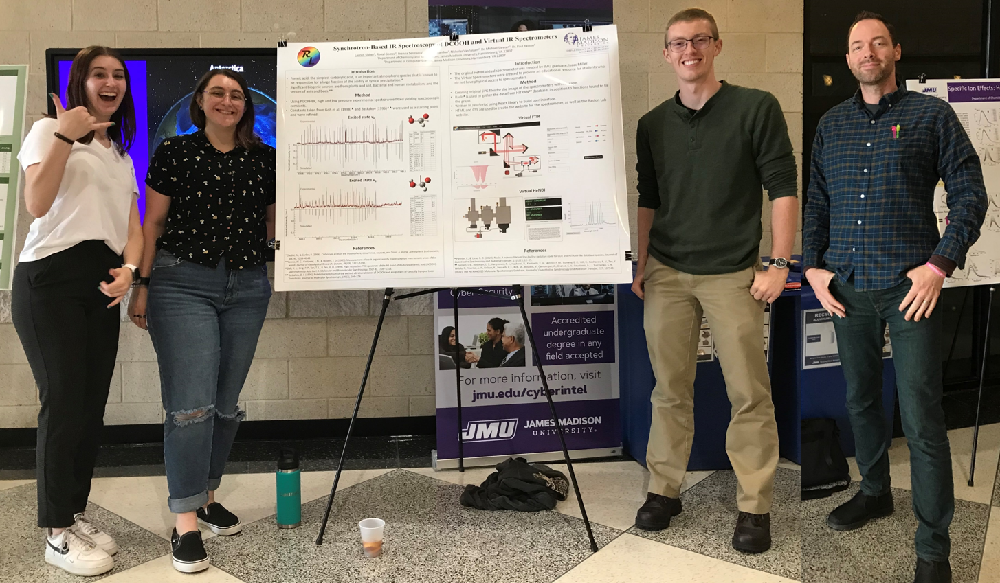

Welcome to our website!
Spectroscopy is at the heart of what we do; whether it be developing virtual spectrometers for education, or utilizing physical spectrometers for research. We value an inclusive environment and welcome all folks into our laboratories.
Here's Daniel Mischenko presenting at the 76th International Symposium on Molecular Spectroscopy (ISMS 2023):

And a mini group photo from the 2022 CSM Symposium at JMU:
We are grateful to the following organizations